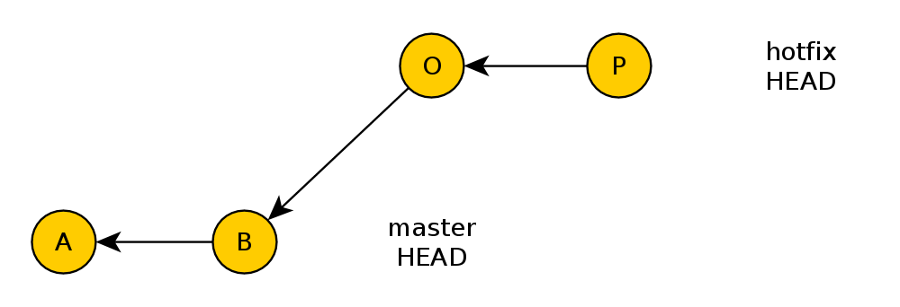
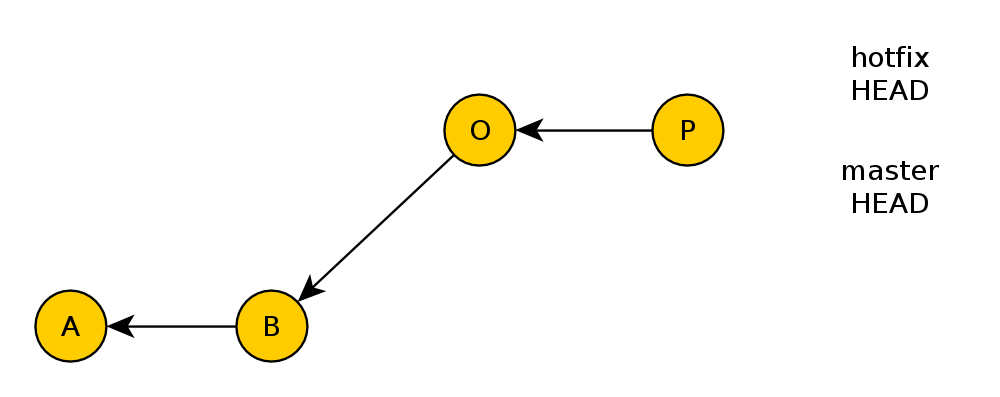

Einleitung
Grundlagen
Best Practices
Fragen/Diskussion
Dezentral
Nicht-lineare Entwicklung
Sicher
Effizient
File basiert, Delta-Storage
Hash basiert, Snapshot-Speicherung
Repository
Commit
Working Tree
HEAD
Staging Area / Index
master
Branch
Tag
ID = SHA ( Dateiinhalt + Dateigröße )
Jede Datei wird nur einmal gespeichert
Blobs sind unveränderlich
ID = SHA ( Blob-Hashes + Tree-Hashes )
Verzeichniszuordnung
Berechtigungen
Dateiname
Verweis auf untergeordnete Trees
Trees sind unveränderlich
ID = SHA ( Autor + Datum + Trees + Blobs )
Commits referenzieren 1..n Eltern-Commits
Ein Commit mit mehreren Eltern: Merge-Commit
Ein Commit mit mehreren Kindern: Branch-Knoten
Alle Commits = History
Commits sind unveränderlich
Branches: Referenzen auf einen Commit
Tags: Referenzen auf einen Commit
Referenz: Name für einen Hash
$ git branch -v
master 8dc350a SW-5671 - Add parellel lint processing
* shop-ekz-de ac9e8af Konfiguration der OxaionDB jetzt per PDO
~~~
Branchen ist günstig
Branch early, Branch often
Zusammenführen: Merging & Rebasing
Änderungen von Dev in Master verfügbar machen
git checkout master; git merge dev
Ausnahme: Fast Forward Merge
 Rebasing: Verändern des Base-Commits eines Branches
git checkout dev; git rebase master
TODO: Feature soll aus Dev gebrancht sein
TODO: Feature soll aus Dev gebrancht sein
git rebase --onto dev master feature
Pick
Squash
Edit
Drop
Lineare Entwicklungshistory
git config core.filemode true|false
If false, the executable bit differences between the index and the working copy are ignored; useful on broken filesystems like FAT. See git-update-index(1). True by default.
text=auto
text eol=lf
Niemals veröffentlichte Commits rebasen.
git config branch.autosetuprebase always
Features, Bugs, Experimente.
Müssen nicht gepusht werden.
git stash save "Stashname oder. Beschreibung"
git stash apply stash@{1}
Git Bash auf Windows
Capitalized, short (50 chars or less) summary More detailed explanatory text, if necessary. Wrap it to about 72 characters or so. In some contexts, the first line is treated as the subject of an email and the rest of the text as the body. The blank line separating the summary from the body is critical (unless you omit the body entirely); tools like rebase can get confused if you run the two together. Write your commit message in the imperative: "Fix bug" and not "Fixed bug" or "Fixes bug." This convention matches up with commit messages generated by commands like git merge and git revert. Further paragraphs come after blank lines. - Bullet points are okay, too - Typically a hyphen or asterisk is used for the bullet, preceded by a single space, with blank lines in between, but conventions vary here - Use a hanging indent
JIRA
Jabber
...
git init --shared
initialisiert ein Repo mit
"receive.denyNonFastForwards = true"
"receive.denyDeletes = true"
git log subsets
git log branchtomerge ^master
git add .
git commit
Commit Message.
git status
git add filename filename filename
git add -p
Branches: master, dev, feature-***, bug-***, hotfix-***
dev und master leben für immer
feature-, bug- und hotfix-Branches werden gelöscht
master ist immer sauber, keine direkte Arbeit
Nur fast-forward commits nach master
dev ist der Hauptentwicklungsbranch
dev -> release -> master
Git muss verstanden werden
Investierte Zeit, zahlt sich definitiv aus
Nimmt uns Arbeit ab
Erhöht Versionierungqualität
Hilft uns die Codebasis zu verbessern
Einfach rumspielen!
Sonst Fragen, Git Know-How ist da
Scott Chacon's Git Einführung
Video
&
Slides
Git Bücher (free online)
Pro Git
&
Git Magic
Git Webseite
git-scm.com
Wichtige Artikel & ein Video
Advanced Git mit Tim Berglund
A successful Git branching model
A Note About Git Commit Messages
Auschecken von Branches, Tags
Überschreiben von lokalen Änderungen mit --force
Setzt HEAD um
git checkout master
git checkout v1.0
git checkout c10b9
Kopieren von Files aus der History in das Working Directory
git checkout c10b9 files
Auschecken von Commit ohne Referenz: Detached Mode
Trotzdem erzeugen von Commits möglich
Diese sind in der History nicht sichtbar
Nachträgliches Erstellen von Branch
... oder cherry pick, rebasen, merging...
Unstagen von Änderungen:
git add file; git reset file
Verschiebt HEAD von Branch auf andere Position
Ohne Wegwerfen von Änderungen: --soft
Übersprungene Commits als Änderungen angezeigt
Mit Wegwerfen von Änderungen: --hard
Wegwerfen lokaler Änderungen / Leeren der Stage:
git reset --hard
git clean
Zeigt alle durch Referenzen erreichbare Commits + deren History
git log
Zeigt alle Commits
git reflog
Wegpacken von lokalen Änderungen
Erzeugt unsichtbaren Spezialcommit
Nutzbar z.B. als lokale History
git stash save -u "message"
git stash list
git stash apply stash@{1}
Einbinden von anderen Repositories
z.B. Vendor-Libs, Plugins, ...
Referenziert gezielt einen Commit aus Repo an URL
Super-Repo enthält eigenen Code + referenziert Subrepos an bestimmten Stand
Mithilfe Submodules: Version 1.0 von Plugin A,
Version 2.1 von Modul B
Hauptrepository taggen
Dann möglich: git checkout release-v1.1